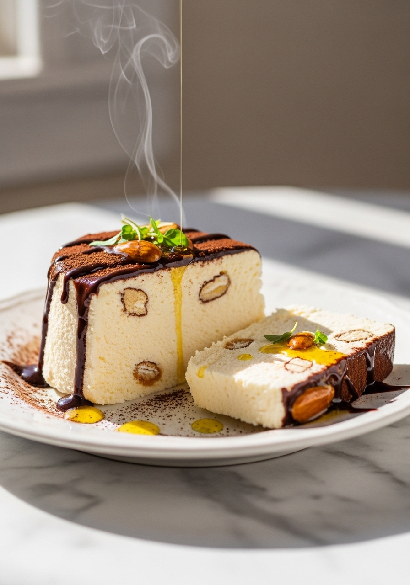
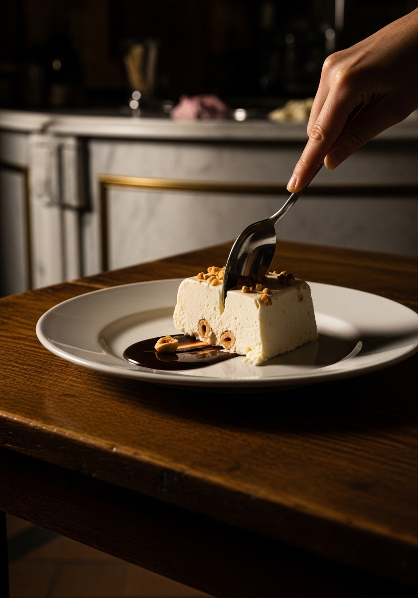

Semifreddo — 'mezzo freddo' in italiano — è il dessert gelato che nessun ristorante italiano si può permettere di non avere in carta. È più cremoso del gelato, più leggero della mousse, e non richiede una gelatiera. Preparalo la sera prima, affettalo a tavola e guarda tutti ammutolire.

Senza GelatieraIl gelato viene mantecato durante il congelamento per rompere i cristalli di ghiaccio, creando una consistenza liscia e densa. Il semifreddo raggiunge una morbidezza simile attraverso un metodo completamente diverso: panna montata, uova sbattute e meringa vengono incorporate insieme, inglobando così tanta aria che il composto congela in uno stato cremoso, leggero, simile alla mousse. Senza mantecatura. Il risultato è più morbido e spumoso del gelato, con una consistenza tipicamente italiana — si affetta in modo netto ma si scioglie in modo voluttuoso in bocca.
La ricetta base è neutra — il che la rende infinitamente versatile. Il semifreddo al pistacchio è la versione italiana più famosa: incorpora 80g di pasta di pistacchio e pistacchi tostati tritati. Caffè e cioccolato è spettacolare: aggiungi 3 tazzine di espresso raffreddato e scaglie di cioccolato fondente. Fragola: incorpora 150g di purè di fragole fresche. Amaretto: aggiungi 3 cucchiai di liquore Amaretto e amaretti sbriciolati. Ogni versione usa la stessa base — cambia solo l'aroma.
Ingredienti
Procedimento

Il semifreddo si conserva in freezer fino a 2 settimane, ben avvolto nella pellicola. Tiralo fuori dal freezer 5 minuti prima di affettarlo per ammorbidirlo leggermente. Servi a fette su piatti freddi — la temperatura del piatto conta. Guarnisci con frutta fresca, un filo di miele, una spolverata di cacao o granella di frutta secca in abbinamento al gusto scelto.
Sì — usa un rapporto di ⅔ panna montata e ⅓ latte condensato zuccherato al posto del composto a base di uova. È più semplice e comunque molto cremoso, anche se meno simile alla mousse. Mescola il latte condensato con gli aromi e incorpora nella panna montata.
Il composto non è stato areato abbastanza — la panna, gli albumi o i tuorli non erano stati montati al volume giusto. Tutti e tre i componenti devono avere buon volume prima di essere incorporati. Inoltre, congela per almeno 6 ore — un tempo di congelamento insufficiente può causare cristalli di ghiaccio.
No — va bene qualsiasi contenitore adatto al congelatore. Piccoli stampini singoli o stampi in silicone creano belle porzioni individuali. Uno stampo a cerniera rotondo crea una torta semifreddo. La chiave è rivestire con pellicola trasparente per sformare facilmente.
Di solito bastano 5-10 minuti a temperatura ambiente. Deve essere abbastanza fermo da affettarsi in modo netto ma abbastanza morbido da sciogliersi in bocca immediatamente. Il semifreddo si ammorbidisce più velocemente del gelato.
Questa ricetta usa uova crude. Se sei preoccupato, usa uova pastorizzate. In alternativa, scalda i tuorli e lo zucchero a bagnomaria fino a 70°C continuando a sbattere — questo li pastorizza — poi procedi con la ricetta.